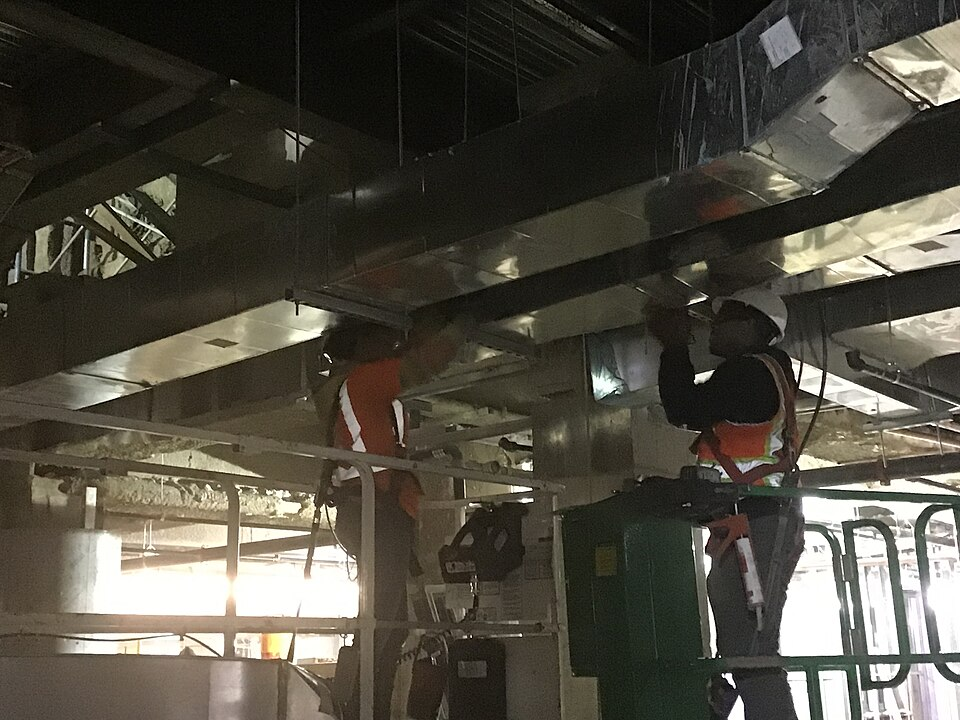

BMS fieldwork: diagnose and commission a damper
The BMS says the outside-air damper is half open. The damper shaft has barely moved. Follow the command from the workstation to the controller and actuator, then use an independent observation to work out what failed.
If you’re aiming for installation work first, start with P22’s room sensor and cable labels. Come back to this case when you want to learn fault-finding.
For a spoken overview of the work, watch Phil Zito explain building automation careers. For Australian job ads, compare the duties and licensing in C11.
Start at the plant and the drawing
In this worked example, facilities staff report stuffy meeting rooms after an AHU service. You have the latest drawing, the AHU sequence and a points list. Find which air handler serves the rooms and confirm that the outside-air damper is supposed to open at the time of the complaint. The schedule, operating mode and interlocks can all explain a closed damper before there is anything to repair.


Get agreement on whether a test may move the damper and when the plant may be taken out of service. Use the site isolation procedure before anyone puts hands on moving parts. For learner practice, use the 5 V trainer below.
Watch what a BMS technician does during a customer visit, then watch the AHU walkthrough and identify the parts that carry air and the devices that report its condition. Grosvenor Engineering Group on a customer site · CCPIA AHU walkthrough.
Follow three different signals
These are example tags for the same damper, AHU-01 OA-D01. Locate the controller output and input on the drawing first. Then match the field labels and the exact actuator model before using the manufacturer’s connection diagram. A BMS point can show the requested position, the motor’s reported position or a separate field measurement.
| Example point | Path | What it proves |
|---|---|---|
| OA-D01-CMD · AO | Controller analogue output → actuator command wire Y | The position requested. Check the voltage at the actuator to prove it arrived. |
| OA-D01-POS · AI | Actuator feedback wire U → controller analogue input | The position reported by the actuator. A slipping clamp can leave the damper stationary while this value changes. |
| Independent physical check | Shaft or blade position observed from a safe point | Whether the damper itself moved. If the job also calls for outdoor airflow in L/s, use the specified airflow measurement. |


For the Belimo LM24A-SR in this example, connection 1 is the signal reference, 2 supplies nominal 24 V AC/DC, 3 is the 2–10 V DC command input and 5 is the 2–10 V DC feedback output. The example controller maps 2 V to 0% and 10 V to 100%, so 50% should be 6 V. Check the approved direction of travel before assigning a percentage to blade position. Belimo wiring diagram and model data.
Work the fault with measurements
Save the starting state. Record the AHU tag, mode and time. Trend command and feedback together. Verify the displayed feedback is mapped to the analogue input from U. Otherwise the graphic could be showing the command twice.
Compare the panel, device and shaft. During an approved test, the technician has 24.1 V DC across 2 and 1, a 6.0 V output at the controller and 6.0 V from Y to 1 at the actuator. U to 1 settles near 6.0 V. The actuator indicator rotates, but the shaft mark stays near closed.
Inspect the first place the evidence disagrees. The supply and command reach the actuator and its indicator moves. The first mismatch is between the moving actuator and the stationary shaft. In this example the isolated inspection finds a loose clamp and matching slip marks. Check the shaft and linkage condition before refitting to the manufacturer’s instructions.
Prove the repair and hand it back. Watch the shaft at 0%, 50% and 100%, allowing travel to settle at each position. Record command, feedback and physical result. Release the test override, confirm automatic operation and tell facilities what was fixed. Macquarie’s procedure calls for physical response checks and a recorded return to normal conditions. Macquarie University damper commissioning method.
Choose your next check
Each variation starts with a 50% command and has one changed condition. Say what you would check before opening the answer.
Panel output is 6.0 V, but actuator Y to 1 is near 0 V.
Confirm the test uses the correct signal reference at each end. Check the labelled command and common conductors between the panel and the actuator. With power isolated and the leads separated as required, check continuity to distinguish an open conductor from a bad termination or a reference problem.
Y and U are near 6.0 V at the actuator. The shaft moves, but the BMS feedback stays at 0%.
Check the raw controller input at the terminal named in the points list. If it is also near 6.0 V, examine the input type, scaling and point mapping. If the field and panel readings differ, trace the feedback wire and its reference to the controller.
The screen says 50% and the controller output is 5.0 V. Wiring and references check out.
Compare the output range with the exact actuator data. A 0–10 V output map gives 5 V at 50%. On a 2–10 V input that voltage is 37.5% of the nominal electrical span. Record the mismatch and check the approved configuration before changing it.
What changes between installation and service

Photo by MTA Capital Construction Mega Projects, resized. Original photo · CC BY 2.0.
.jpg){kind=link}
Try the installer handover using the one-sensor drawing exercise. Record the device tag, where it is mounted, where its cable ends and one site condition that the next technician should know.

_(39727884614).jpg){kind=link}
- Construction. Find the mounting location, cable route and clearances on the approved drawing. Check that the actuator remains accessible for service and clears other equipment through its travel. Obtain the approved fixings and access equipment for that exact location. Label both ends before the ceiling closes. Macquarie pre-commissioning panel checklist · C13 site access and ladder video.
- Commissioning. One person commands the point from the laptop. The person at the unit reads the signal and describes what moved. Agree on the tag and test step before each command, and log the readings together. Use the meter to separate an output problem from a field wiring problem.
- Service. Choose the instrument for the claim you need to verify. A reference thermometer checks a temperature point. A differential manometer checks pressure across two specified taps, for example across a filter. For a damper complaint, compare the actuator indicator with a shaft witness mark. A separate airflow reading is needed when the complaint is about air quantity.
Reproduce the fault on a 5 V bench
Use a 5 V USB-powered Arduino Uno as the supply, two 10 kΩ linear pots, a 100 kΩ resistor, a breadboard, jumpers and a multimeter. Use two paper pointers on a piece of card for the actuator indicator and shaft mark. The two pots let you set command and feedback independently, at half the field voltages.
Wire the model. With USB unplugged, connect the outer legs of both pots across 5 V and GND. Put a removable jumper between the first wiper, labelled panel AO, and a free breadboard row, labelled field Y. Connect 100 kΩ from field Y to GND. Label the second wiper field U. Both pots share GND.
Record a normal midpoint. Power the trainer. Set the meter to DC volts and connect COM to GND. Adjust the first pot until panel AO is about 3.0 V. Measure field Y, then set U to about 3.0 V. This represents the 6.0 V command and feedback in the field. Put both paper pointers at mid-travel.
Test two faults. Remove the AO-to-Y jumper. Record panel AO near 3.0 V and field Y near 0 V. Reconnect it. For a simulated slipping clamp, leave Y and U at about 3.0 V and move only the shaft pointer back to closed. State what check distinguishes these two faults.
Log and hand over. Record one normal test and both failure cases in the table format below. If your supply voltage differs from 5 V, use the measured readings in your notes. Disconnect USB when finished.
| Test | Command | Panel AO / field Y / field U | Shaft observed | Result |
|---|---|---|---|---|
| Before repair | 50% | 6.0 / 6.0 / 6.0 V DC | Near closed | Fail. Actuator and shaft disagree. |
| After refit | 0%, 50%, 100% | About 2 / 2 / 2, then 6 / 6 / 6, then 10 / 10 / 10 V DC | Closed, mid-travel, open | Pass on observed travel. Override released and automatic mode confirmed. |
For an interview, bring one drawing with the points marked, one labelled photo of your trainer, and the two readings that changed your diagnosis. Follow this with an independent fan proof and a recorded fault trend in P29. Practise the networking part separately in C02.
Which jobs to look for
In the project’s SEEK sample of 51 BMS and controls ads, drawings appeared in 16, IP networking in 12, and BACnet and Modbus in 11 each. For junior controls or commissioning work, show that you can read the drawing, check a signal and communicate a result. For installation work, also look at the employer’s apprenticeship, site and trade requirements. SEEK research and adjacent roles · Alerton Australia role descriptions.
If you are starting on the installation side, mount, label and check a room sensor on a mock wall. Once you can trace the damper command physically, confirm the point at the controller and record the command and proof.